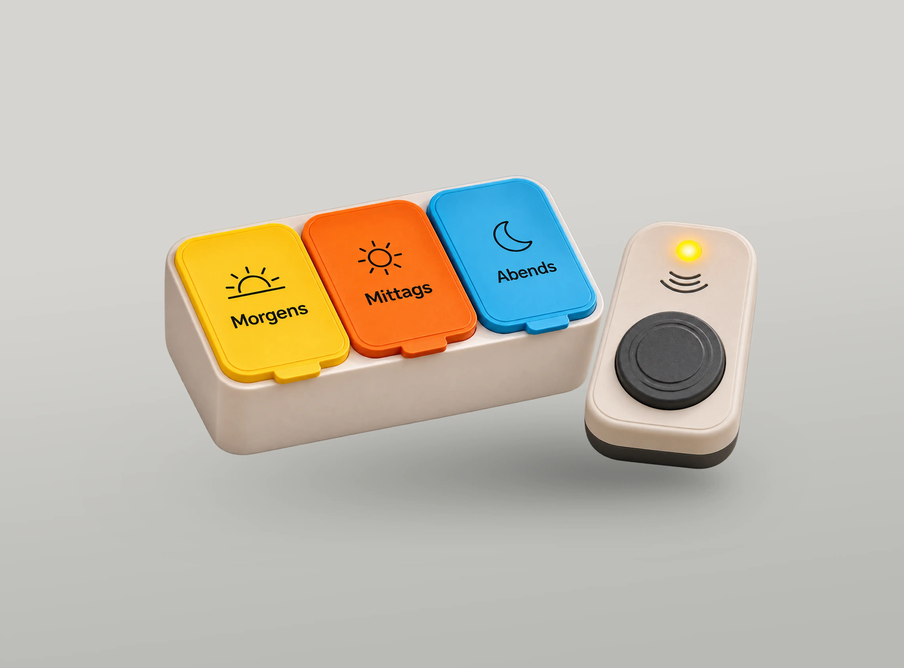
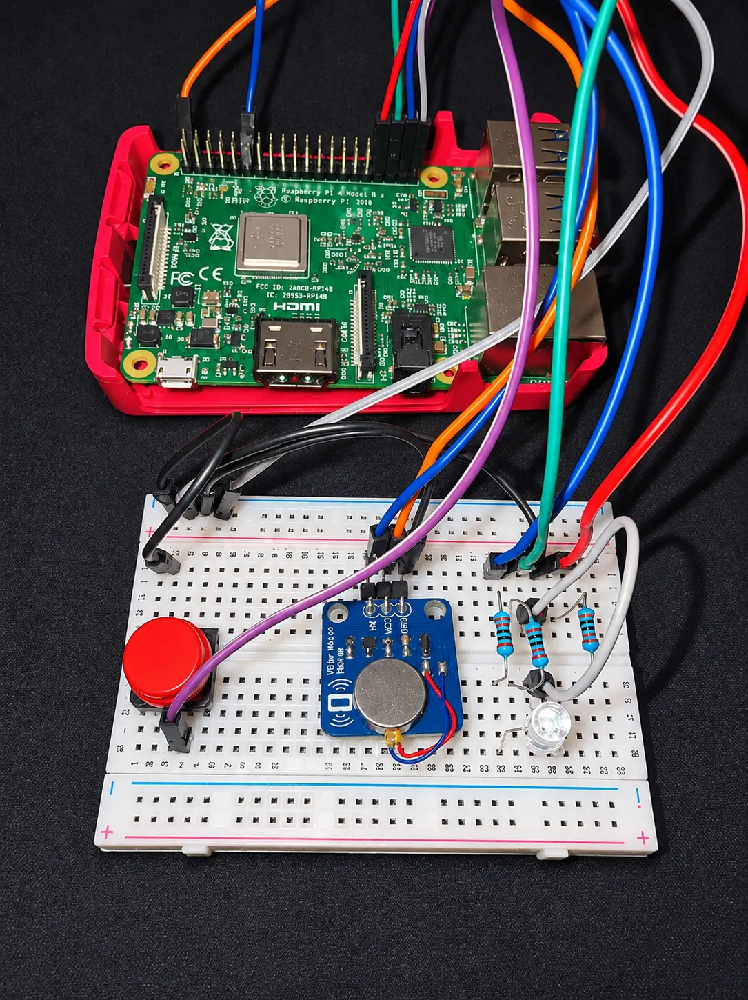

REMInder
REMInder entstand im Rahmen eines Hochschulmoduls, in dem wir als Team eine barrierearme Lösung für Menschen mit
Beeinträchtigungen entwickeln sollten. Unsere Idee war eine Medikamentenerinnerung, die insbesondere ältere Menschen
sowie Personen mit Hör- oder Gedächtnisbeeinträchtigungen bei der regelmäßigen Medikamenteneinnahme unterstützt.
Zu Beginn entwickelten wir auf Basis unserer Recherche eine Persona, um die Bedürfnisse und Herausforderungen
unserer Zielgruppe besser zu verstehen. Das Konzept ermöglicht die Einrichtung individueller Einnahmezeiten per Software.
Zur gewünschten Uhrzeit erinnert das Gerät täglich durch Licht-, Vibrations- und Tonsignale an die Medikamenteneinnahme.
Die integrierten LEDs leuchten dabei passend zur Farbcodierung der Medikamentenbox, sodass Nutzer direkt erkennen,
welches Fach für die jeweilige Einnahme vorgesehen ist. Über einen großen, haptisch gut erkennbaren Button lässt sich
der Alarm ausschalten.
Mithilfe eines Raspberry Pi und verschiedener elektronischer Komponenten entwickelten und programmierten wir die
grundlegenden Funktionen mit Python. Anschließend testeten wir den Prototyp anhand eines Nutzungsszenarios und
evaluierten die Verständlichkeit der Signale sowie die Bedienbarkeit. Die Ergebnisse zeigten eine intuitive Nutzung
und eine erfolgreiche Zuordnung der Medikamente.
Mögliche Weiterentwicklungen wären unter anderem eine automatische Erkennung der Medikamenteneinnahme, sodass der
Alarm erst nach der Entnahme der Medikamente ausgeschaltet wird. Zudem eine Verriegelung der einzelnen Fächer, die sich erst
zur jeweiligen Einnahmezeit öffnen lassen, sowie die Ausarbeitung eines fertigen Gehäuses zur Verkleidung der technischen Komponenten.

Hardware-Prototyp mit multisensorischen Signalen
REMInder